Мой Мир
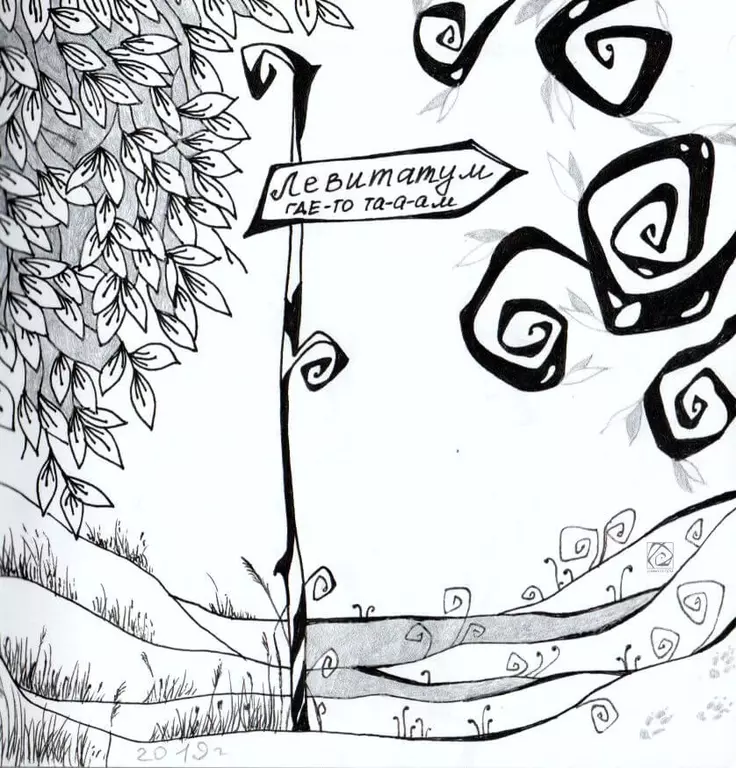
У меня есть одна необычная способность.
Я вижу другой мир.
Он сильно отличается от нашего и населён разнообразной жизнью.
Первый раз я обнаружила его ещё в детстве и тогда же поняла, что больше никто его не видит.
Этот удивительный мир я назвала - Левитатум. За многие годы у меня накопились образы, истории, наблюдения, которыми пришло время поделиться с вами.
Они
Заглядывая в мир Левитатум, я чаще вижу вот этих существ.
Они самая многочисленная форма жизни.
Как их зовут
Никому не рассказывая о мире Левитатум, мне не было нужды именовать его обитателей. Когда же появилось желание делиться этими историями, я поняла, что нужно будет их как-то называть.
Около года я ломала голову и подбирала варианты названий главным жителям мира Левитатум. Их было сотни.. Я пробовала разные подходы. Искала в других языках. Миксовала слова. Пробовала случайный подбор букв. Все тщетно! Ни один вариант так и не лёг, не прижился.
Несколько раз я забрасывала эту идею «на дальнюю полку», надеясь, что подсознание все сделает само. Знаете, так бывает? Этот трюк так же не помог.
Ах, так! – обижалась я, - Не хотите называться, останетесь просто Неведомыми Зверюшками!
Но скоро, с энтузиазмом, вновь пыталась понять, как же называются они на человеческом?
И вот сегодня я наконец поняла что они...
.. Левитяне! А если ласково – Левитятки))) И никак иначе )))
И ведь это слово лежало на поверхности.
О ягодных насекомышах
В Мире Левитатум, на пышных ягодных кустах, живут особые насекомыши. Особенность их в том, что при контакте со слюной они способны устраивать микровзрывы. Поэтому, собирая ягоду, так важно их вытряхивать и вообще глядеть в оба! Маленькие взрывы во рту никого не обрадуют.
Из этой особенности насекомышей возникло веселое развлечение: молодые Левитятки подходят к кусту и оплёвывают его, вызывая серию микровзрывов. Ночь – лучшее время для этой забавы.
Острова
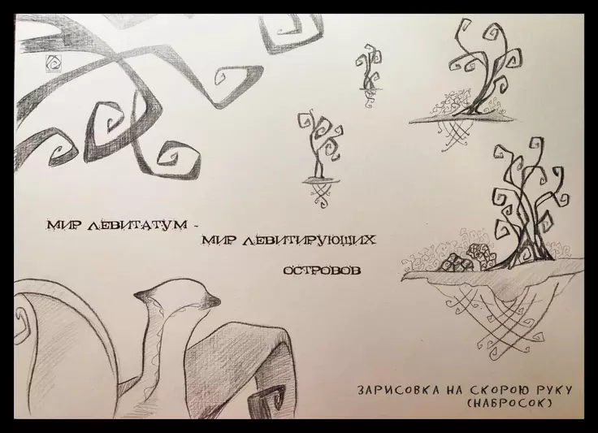
Не могу сказать, что знаю о Мире Левитатум всё.
Я вижу его как бы сквозь мутное стекло или толщу воды. Иногда чётко проступают подробности и частные детали. В другой раз удаётся охватить и понять общую картину мироустройства.
Мир Левитатум открывался, и продолжает открываться мне, постепенно.
Первое что я о нём когда-то поняла: это мир левитирующих островов, отсюда и название. На каждом острове обязательно растёт вихревое дерево. Правильнее было бы сказать, что это деревья отращивают себе острова.
Дело в том, что именно вокруг молодых корешков начинает накапливаться земля. Разрастается дерево, разрастается и остров.
Острова бывают разных размеров. Иногда они соединяются. Кроме главного дерева, на острове могут жить и другие растения. Но без вихревого дерева не бывает островов. Когда вихревое дерево умирает, остров рассыпается. Умирание, как и зарождение островов, это крайне редкое явление.
Мир Левитатум – мир симбиоза*, всё живое состоит в разнообразных сложных и неразрывных связях друг с другом, впрочем, так и в нашем с вами мире, но в Левитатуме эта связь гораздо явственнее. Вихревые деревья и Левитяне – основные существа-симбионты.
*симбиоз, это наиболее подходящее понятие из известных мне.
Вихрь
Этот элемент из Мира Левитатум называется - вихрь.
Все что имеет вихрь, имеет способность к левитации.
У вихревых деревьев эта способность самая мощная.
Как они общаются?
Активной речи у Левитян я не наблюдала, но действуют они всегда слажено. У них очень развит язык тела. Неуловимые для непривыкшего человеческого глаза жесты, выражение мордочки, положение хвоста и всем всё становиться понятно!
Издаваемые ими звуки похожи на покашливание. Тихое и нежное. Мир Левитатум вообще довольно тихое место.
Мордочки Левитян
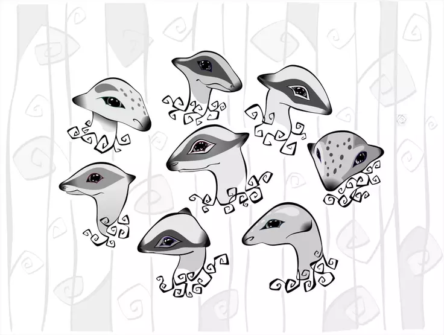
Левитяне очень похожи, но только на первый взгляд. Сегодня хочу показать вам мордочки Левитян поближе. Они вполне очаровательны: широкий лобик, аккуратный носик и умные блестящие глаза.
Ночь и День
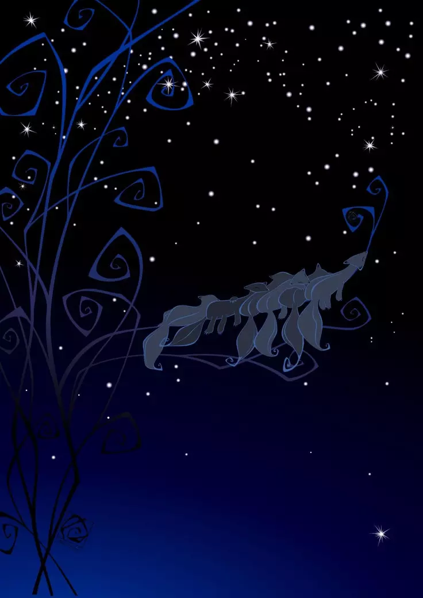
В мире Левитатум день не сменяется ночью, а ночь днём. Ночь и день существуют одновременно. Пространство поделено на светлую и звёздную части.
Когда Левитяне понимают, что острову пора отдохнуть, они всей стайкой садятся на верхушку главного Вихревого Дерева и начинают его раскачивать, пока весь остров не переворачивается на ночную сторону. Центр гравитации в этом мире находится в корнях, поэтому верхушка всегда вверху.
Кувыркнув остров в ночь, Левитяне устраиваются на удобной ветке по несколько штук и сладко спят. Выспавшись, они снова скапливаются на верхушке дерева и меняют положение на дневное.
Раскачивание острова
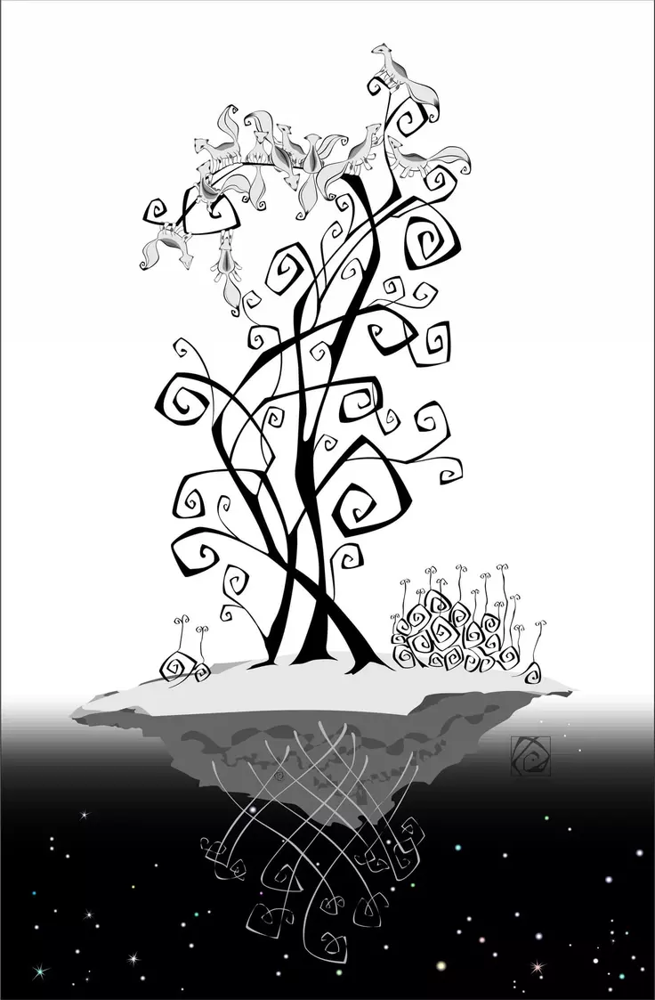
Прошлый раз я рассказала и показала, как Левитятки спят. Новая картинка иллюстрирует, как они скапливаются на вершине дерева, начиная его раскачивать.
Листовей
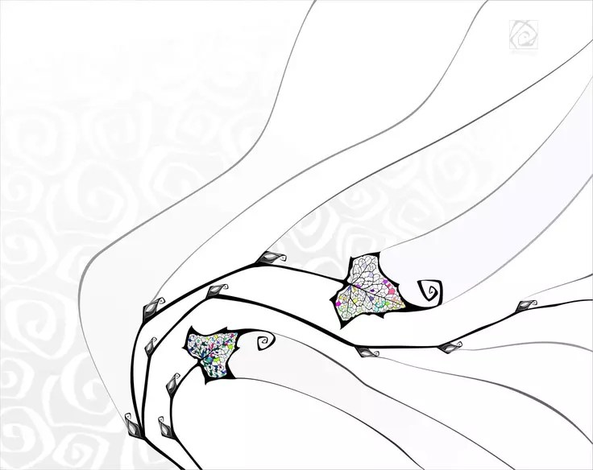
В мире Левитатум нет привычных нам облаков, нет дождя, снега, зноя. Там всегда одинаково тепло на светлой стороне и немного прохладнее на звёздной. Этот мир не является планетой, поэтому в нём не бывает цикличной смены погоды.
Но там, как и у нас есть Ветер. Этот Ветер похож на наши ветра, но служит он необычным целям и появляется необычным образом. И вот как это происходит...
Одновременно, на разных островах Левитяне начинают выращивать особые растения – Листовеи. У Листовеев гибкие и упругие стебли, они стелятся по земле и могут быть очень длинными. Когда на стеблях раскрываются первые ажурные листы, из дозревающих почек начинает сочиться Ветер, всё сильнее и сильнее.
Сплетаясь с другими потоками, Ветер набирает силу. И вот уже мощные широкие струи приводят в движение острова! Начинается самое веселье! Крупные острова, несутся, раскачиваясь, подхваченные Ветром, легко, словно пушинки! Что уж говорить о средних островах и островках-малютках, которые и вовсе кувыркаются и кружатся как сумасшедшие! Тут только держись! Но многие существа и не думают держаться, они рады увлечься танцем Ветра! В апогее этого веселого безумия мир Левитатум похож на мешанину крутящихся островов и кружащихся существ. Всё путается, вращается и кувыркается! Всё несется кубарем, закручивается по спирали, сближается и разлетается! И восторгу нет предела! Острова, семена, насекомыши, Левитяне и другие обитатели мира самозабвенно отдаются на волю Ветра.
Когда все листья Листовея раскрываются, ветер стихает.
Мир Левитатум обновлён.
Мир Левитатум снова становиться спокойным и умиротворенным местом.
Как Левитяне попадают в наш мир
Левитяне очень любопытные создания. Им не сидится на месте настолько, что они даже путешествуют по мирам.
И на Землю тоже!
Когда у одного какого-нибудь левитёнка накапливается достаточно много любопытства, он ищет особый Вихрь на особом Вихревом Дереве и просто идёт по спирали, к самому центру, пока не исчезает…
На другом конце мироздания, где-то, совсем далеко от мира Левитатум, живёт своей интересной, непонятной, незнакомой левитянам жизнью, прекрасная голубая планета. А на ней неприметная я. И вот когда левитянин уходит из своего мира, в тот же миг, у меня на душе как-то по-особому теплеет. Я понимаю, что нужно бежать на улицу и искать в кронах деревьев, в самой путанице ветвей Тоннель. Как только глаз его отмечает, левитёнок проскакивает в наш мир прямо мне в руки! Такой тёплый, живой и по-особому невесомый. Мы обнимаемся, знакомимся, он гостит у меня какое-то время, а потом непременно отправляется узнавать наш мир во всем его великолепии.
Чаще всего переход выпадает на утро. На самое его начало. Когда притихшая и отдохнувшая природа, еще не набрала цвет бурного дня. Когда ночные жители уже уснули, а дневные только-только приоткрыли глазки.
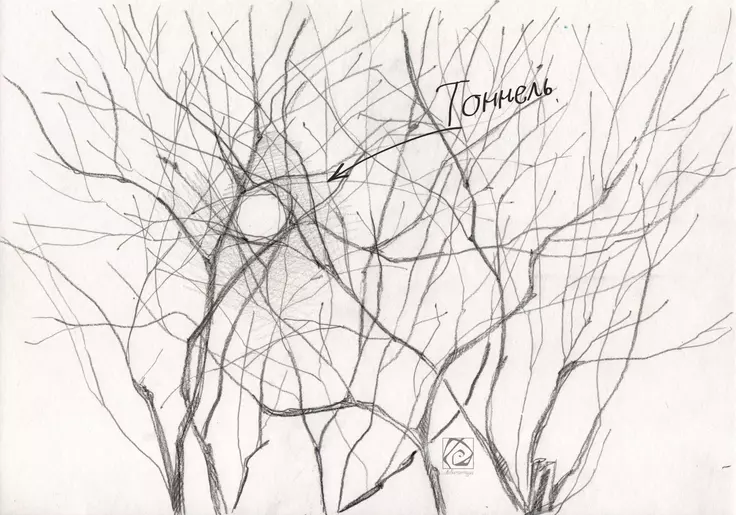
Вот так выглядит Тоннель, я нарисовала его для вас. А вот попытки его сфотографировать были неудачными. На фотографиях он засвечивается или «рассыпается» не образуя заметного кольца из ветвей. Волшебство не терпит посредников между собой и глазом.
Такие тоннели не редкость, главное найти правильный ракурс. Попробуйте отыскать его, вдруг и вас ждёт приятная встреча)))
Вот так выглядят Левитяне когда попадают в наш мир
О цвете в мире Левитатум
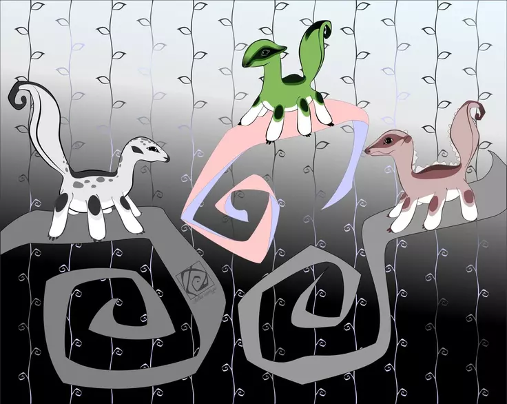
Вы видите мир Левитатум на моих рисунках чёрно-белым. Таким его вижу и я, когда рассматриваю внутренним зрением. Иногда в картинки я от себя добавляю цвет.
Но все прибывшие сюда Левитяне цветные. И невозможно понять, принимают ли они цвета этого мира, попадая сюда, или же Левитатум полноцветный мир, просто его краски не видны отсюда.
Их глаза
У Левитян добрые умные и весёлые глазки. В своём мире они блестящие и тёмные, а при переходе к нам в их глазах навсегда остаётся отражение родного дома.
Развлечения. Качели.
Излюбленное времяпрепровождение Левитян – активные игры.
Например – качели!
Подбираются подходящие упругие ветви с вихрями на конце… и вперёд! Тут важную роль выполняет хвост. При этом лапки расслабленно болтаются вверх-вниз, перед глазами сливается прыгающий мир, а в голове искриться веселье! Кто выше? Кто ниже? Кто дольше? Умение раскачаться – врождённый талант))))
Следы
Кроме левитян мир Левитатум населён и другими созданиями. С одной из разновидностей насекомышей вы уже знакомы. Постепенно я покажу вам тех, кто попался мне на глаза, а сегодня следы кого-то, кто не попался )))
Поющие Туманные Рыбы. Откуда берутся Левитяне.
Приходит время, когда звездную часть мира Левитатум пересекает широкими потоками Туман. Он несёт в себе поющих туманных Рыб. Явление это красивое и волшебное. Песни Рыб - это музыка разнообразных миров, через которые они когда-либо проплывали. Рыбы запомнили мотив и вплели в свою чешую, при движении она звучит загадочно и мелодично.
Величественно, медленно туман пересекает мир Левитатум, конденсируясь на вихрях готовых принять росу. В капле начинает отражаться и преломляться звёздный свет. В этот свет вплетаются гармоничные песни рыб. И от этой встречи звука и света, в капле принятой вихрем, зарождается жизнь Левитёнка.
Потоки тумана покидают мир Левитатум, унося с собою волшебных поющих рыб. А остров остаётся перевернутым на звездную сторону пока жизнь в капле крепнет и развивается. Все это время Левитяне усиленно ухаживают за вихревым деревом, хранящим молодую жизнь. А так же они выращивают светлячковые цветы и переносят с других островов светлячковых насекомых. Их свет, вместе со светом звезд подпитывает волшебство зародившейся жизни.
Когда Левитенок перестает светиться и звучать, а росинка темнеет, остров переворачивают на светлую сторону. Капля впитывается в вихрь, а новенький Левитёнок попадает в теплую компанию заждавшихся его соплеменников)))
(Возможно, способ их происхождения объясняет тягу к другим мирам.)
Светлячковые растения. Всёсемечко. Как Левитяне выращивают растения.
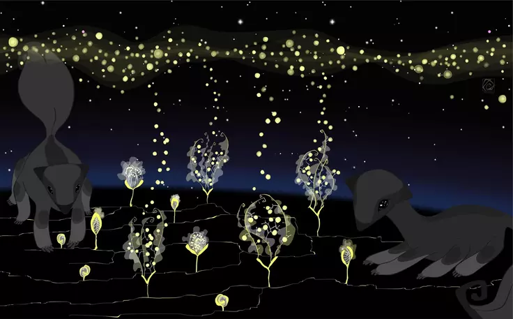
Когда нужно вырастить растение, Левитяне спускаются к корням Главного Вихревого Дерева и выискивают среди них Всёсемечко.
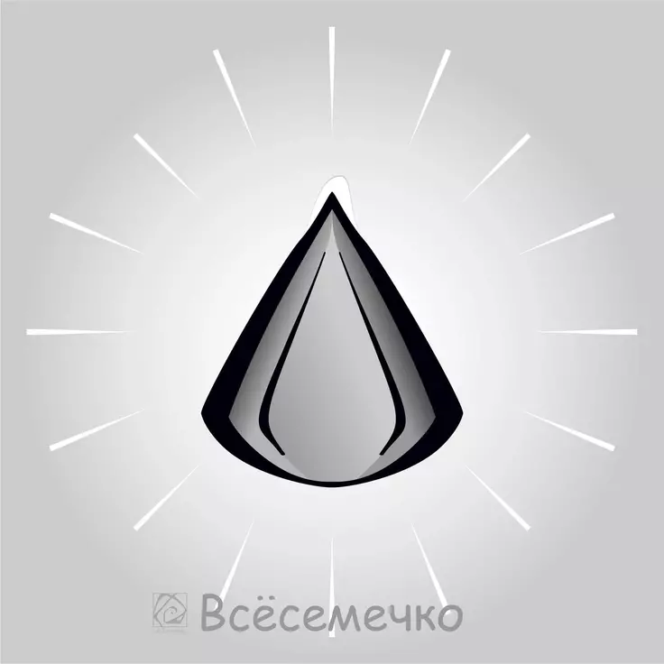
Всёсемечко это такое семечко, из которого может вырасти всё что угодно. Как же такое возможно? Дело в том, что всёсемечко совершенно не знает, чем оно может быть. Но Быть оно очень хочет.
Левитята забирают его, кладут на нужное место в землю, а сами собираются вокруг. Тут они становятся особенно довольными на вид, прикрывают глазки и начинают мечтать, воображать, представлять, показывая семечку каким быть.
Это как если бы вы пожелали чтобы вырос огурец и вырос бы огурец. А задумали бы помидор, из этого же семечка вырос бы помидор. Или арбуз. Или ель! Или малина!
В этот раз Левитяне задумали вырастить Светлячковые растения. О них вы уже читали в предыдущей истории «Откуда берутся Левитяне», а теперь можете и посмотреть.
Когда всёсемечко прорастает Левитяне не оставляют его, а продолжают заботиться. И не только ведут его рост и развитие мыслью, но и поглаживают, любуются им. А еще разминают почву лапками. Любования и прикосновения особенно нужны молодому ростку, но и взрослые растения получают от Левитян свою порцию внимания.
Левитяне могут ускорять или притормаживать рост растений своего мира. Могут формировать их и выбирать размер. Могут задумать и вырастить растение любого вида и свойства.
От того что остров создан мыслями и заботами Левитян они неразрывно связаны и зависимы. Сами же Левитяне берут своё начало от Вихревого дерева. Порядок вещей в Левитатуме замкнут на самом себе, одно происходит от другого. Причины и следствия замысловато переплетаются. Мир левитирующих островов как целый организм. Он живет на волшебстве и зависимости друг от друга всего, что вмещает.
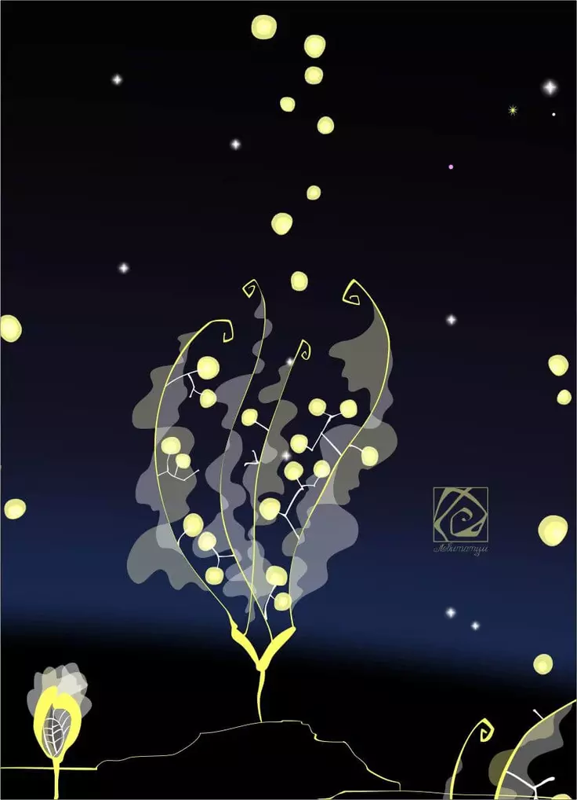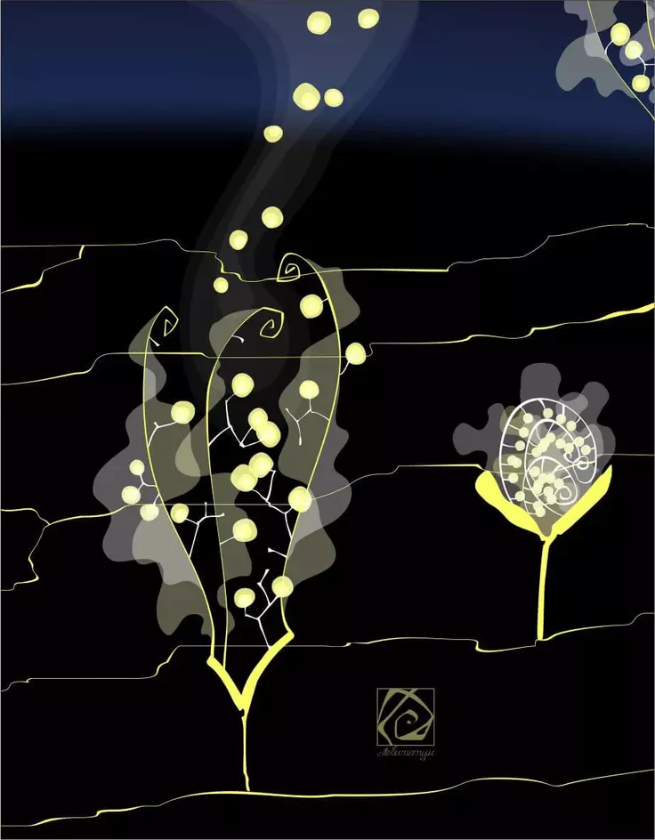
Светлячковое растение на звёздной и светлой части Мира Левитатум.
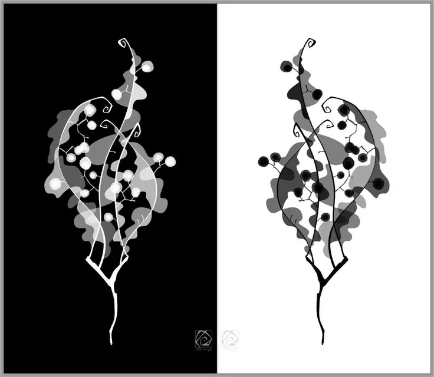
Как начинаются острова
В безмятежной пустоте, между светлой и звёздной сторонами мира Левитатум, на почтительном расстоянии от парящих островов, возникает движение. Это небольшой гравитационный сгусток начинает центростремительное вращение. Поначалу оно едва различимо и скорее ощущается, чем видится.
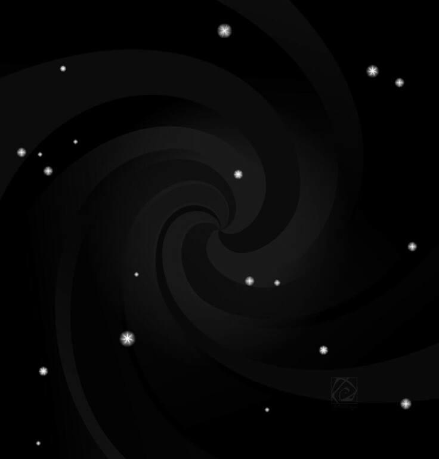
Сгусток уплощается и формируется в Вихрь.
Продолжая вращаться Вихрь становиться крупнее, отращивает корешки и к нему из пространства стремятся притянуться частички. Из частичек складывается почва острова.
Притянув достаточное количество почвы к корешкам, Вихрь начинает «ветвиться», а два вихря это уже, хоть и маленькое, но Деревце. На этом этапе малюсенький островок получает свою собственную гравитацию, перестает вращаться и как поплавок выныривает деревом на светлую сторону. Корешки продолжают притягивать почвенные частички уже благодаря собственной гравитации.
Незаметно начавшийся островок становиться заметен для Левитян. И очень скоро любопытные существа принимаются чаще и чаще левитировать к нему в гости. Они по очереди с энтузиазмом ухаживают за недавно начавшимся островом и помогают ему продолжаться: крепнуть, набирать объёмы, красиво ветвиться изящными вихрями. Особенно сроднившиеся с новым островком Левитяне, в конце концов, селятся на нём.
…
Когда-то молодой мир Левитатум прямо таки бурлил гравитацией. Её необузданный нрав порождал острова один за другим и по нескольку за раз. Со временем этот процесс замедлялся, гравитация успокаивалась. Острова начинались все реже.
Сейчас мир Левитатум – это зрелый мир. Новые острова начинаются крайне редко, только если необходимо восстановить баланс.
*Острова в мире Левитатум это не просто суша с флорой и фауной, это и не волшебный предмет и не отдельное существо. Острова – это целые процессы, в ходе которых жизнь мира набирает обороты, клокочет и веселиться, покрываясь следами от шести лапок. Поэтому, описывая появление острова, я применяю слово «начинается».
Мотыльковые растения
Мотыльковое растение – это ягодный куст. В мире Левитатум огромное множество ягодных кустов и там они особенно любимы. Мотыльковое растение, учитывая его особенности, выращивают за краем острова, выбирая для этого мыс*.
Ягодки зреют в почво-мешочках и имеют восхитительный вкус. Но только если мешочек раскрывается сам собой. В поврежденном раньше времени мешочке ягоды становятся отвратительно кислыми.
Чтобы не пропустить момент созревания, Левитянам приходиться караулить куст, левитируя возле него. Ведь когда почко-мешочки раскроются, сочные вкусные ягодки устремятся прочь от острова на лжекрылышках, которые делают их похожими на бабочек или мотыльков. Тут уж не зевай!
Некоторые Левитяне выжидают возле дозревающего мешочка, заранее открыв ротик и растопырив пальчики. А другие занимают активную позицию, готовясь догонять умчавшуюся вкуснятину.
*Мыс — участок суши, выдающийся острым углом в море, озеро, реку.
Звёздочковое растение
Несмотря на свое "блестящее" название, само растение невзрачное, хотя и довольно крупное. Каждое растение в мире Левитатум чем-то примечательно. Вот это, например, растет в другую сторону.
Сейчас объясню, как это. Левитяне высаживают всёсемечко на "верху", и когда стебель прорастает, то почти сразу ныряет обратно в землю! Пробиваясь через плотную почву острова, он появляется с другой стороны, там, где растут корни главного вихревого дерева. Стебель растет далеко "вниз", он тонкий и жесткий, почти не ветвящийся. На конце стебля образуется бутон, похожий на пятигранное зерно гречки. Плотный и маленький в сравнении со стеблем, бутон на самом деле крупнее головы Левитёнка!
Где же звёзды?

Всё происходит, когда остров с этим растением в очередной раз переворачивается на звёздную сторону.
Тёмные бутоны оказываются на светлой стороне и вдруг раскрываются, превращаясь в крупные сияющие звёзды! Свет их силён и хорошо виден левитянским днём. Звезды падают со стеблей и проносятся "вверх", исчезая там; то ли тая, то ли теряясь вдали. А возможно, теплым летним вечером земляне загадывают желание на одну из них. Ведь наши миры непостижимо связаны. Желание, загаданное на такую звезду, точно сбывается.
А в своем мире Левитяне с соседних островов, перевернутых на дневную сторону, с восторгом следят за их ярким полетом... или падением... это с какой стороны посмотреть.
Звёздочковое растение выращивается из чистого альтруизма, так как создавшие его Левитяне сладко спят под настоящими звездами и ничегошеньки не видят.
Вот такой он, звездопад по-левитянски.
Всё происходит, когда остров с этим растением в очередной раз переворачивается на звёздную сторону.
Тёмные бутоны оказываются на светлой стороне и вдруг раскрываются, превращаясь в крупные сияющие звёзды! Свет их силён и хорошо виден левитянским днём. Звезды падают со стеблей и проносятся "вверх", исчезая там; то ли тая, то ли теряясь вдали. ...
... А в своем мире Левитяне с соседних островов, перевернутых на дневную сторону, с восторгом следят за их ярким полетом... или падением... это с какой стороны посмотреть.
Жужжащий куст
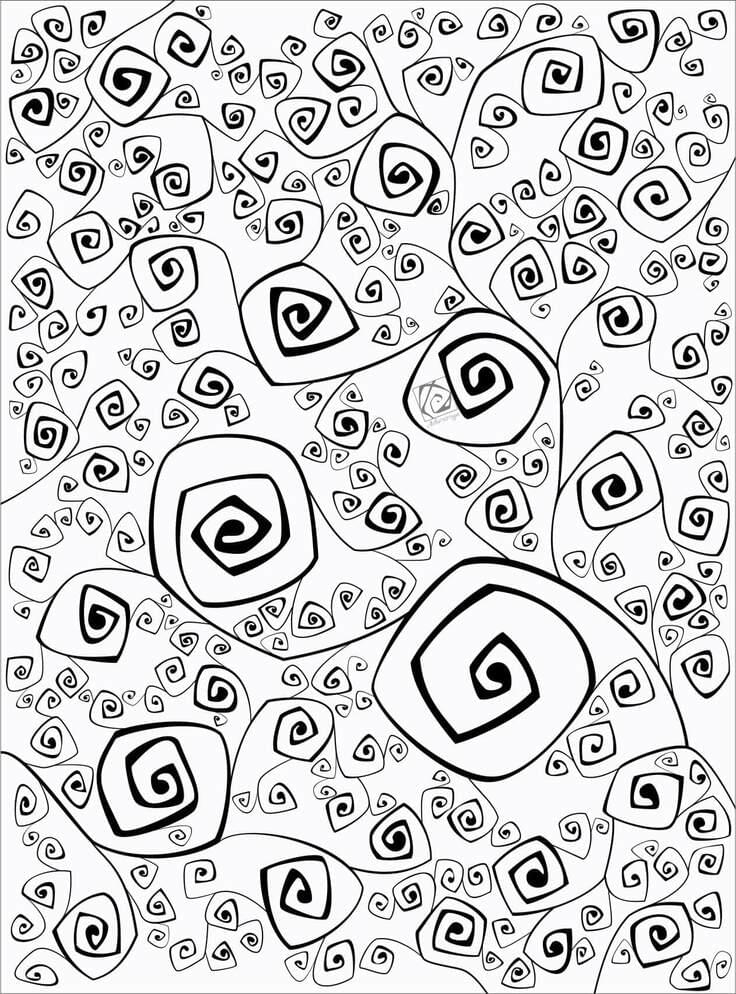
Куст состоит из хаотично разросшихся вихрей разного размера.
Плотные увесистые капли на конце каждого вихорка издают звуки, похожие на деловитое жужжание земных шмелей. Левитятам нравится этот звук. Словно арфисты, они перебирают лапками упругие завитки, и молчание тихого мира Левитатум заполняется мелодичным жужжанием на разные лады.
О лапках Левитян
Их шесть, что позволяет перемещаться по ветвям и уверенно чувствовать себя на растениях. Но так же уверенно лапки помогают Левитянам чувствовать себя и в воздухе!
Присмотритесь – каждый пальчик заканчивается «коготком» со щелочкой. На самом деле это вовсе не когти, они Левитянам ни к чему, это вспомогательный орган управления левитацией (основным является хвостовой вихрь). В полёте щёлочки расширяются, становясь петельками. Через них проходят потоки гравитации. Поворачиваясь, петельки помогают лететь в любом направлении. Благодаря этому, даже не двигаясь, Левитёнок может перемещаться куда вздумается.
Семицветиковое растение
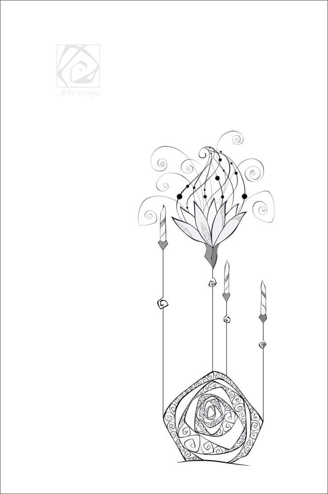
Есть в мире Левитатум замысловато-затейливые растения. Вот одно из них.
Его цветок имеет семь лепестков, каждый украшен по-своему, что в чёрно-белом Мире вполне соответствует различным цветам. Поэтому я назвала его Семицветиковое растение.
Семицветиковое растение не раз попадало в поле моего междумирного зрения, но далеко не сразу удалось его рассмотреть. Очень хотелось запечатлеть его с раскрытым бутоном, когда оно имеет особенно декоративный вид. И вот, совсем недавно, и совсем-совсем близко, мне даже повезло полюбоваться на момент распускания цветка! Я разглядела все мелочи и теперь могу показать его вам!
Чтобы получилось такое сложное узорчатое растение, Левитянам приходиться прилагать большие усилия. Обычно в замысливании, любовании и заботе участвуют пять - шесть Левитян. Ради этого растения собираются десять – двенадцать друзей! Их мысли о прекрасном ажурно переплетаются, материализуясь в завитках и формах Семицветикового растения.
И старания эти не пропадают зря, радуют глаз, украшая острова и привлекая внимание Ласковых Птиц.
Ласковые птицы
Мир Левитатум населён не только левитянами. Постепенно я познакомлю вас со всеми существами, которых там увидела. Сегодня начну знакомить с Ласковыми птицами!
Расскажу вам о них все, что знаю сама. Эти удивительные существа внешне очень напоминают земных пташек.
У них есть клюв – но он мягкий.
У них есть хохолок на голове – но это орган левитации, как у Левитян и у многих других обитателей Мира.
У них есть крылья и хвост из перьев – но эти пальчиковые перья не для полётов.
Самая главная отличительная черта этих птиц - они сами идут в руки, ищут ласки и дают её. Ластятся.
Живут они стайками на островах с особыми вихревыми деревьями. Эти острова напоминают мне перьевые облака Земли.
Ласковые птицы очень любят, когда их глядят по пушистым спинкам. Они от этого прищуриваются и воркуют.
От их воркования на душе становится тепло и уютно, как дома у мамы. Эти любители ласкового общения создают вокруг себя атмосферу безмятежности и благодушия. И эта атмосфера вполне реальна. Её нельзя увидеть, но можно почувствовать.
Именно так лечат Ласковые Птицы.
Если, например, у Левитенка заболит пальчик или даже целая лапка, Ласковая птица подует-поворкует на больное место и недуга как не бывало. Но бывали случаи и посерьёзнее.
Лечебные свойства птиц копятся в капельках расположенных в пушистостях спинок. Чем больше их по спинкам гладят, тем больше лечебного волшебства образуется в каплях.
Птичьи острова равномерно расположены среди других и мир Левитатум поэтому самый здоровый из всех миров.
Спасение Звёздного Левитёнка.
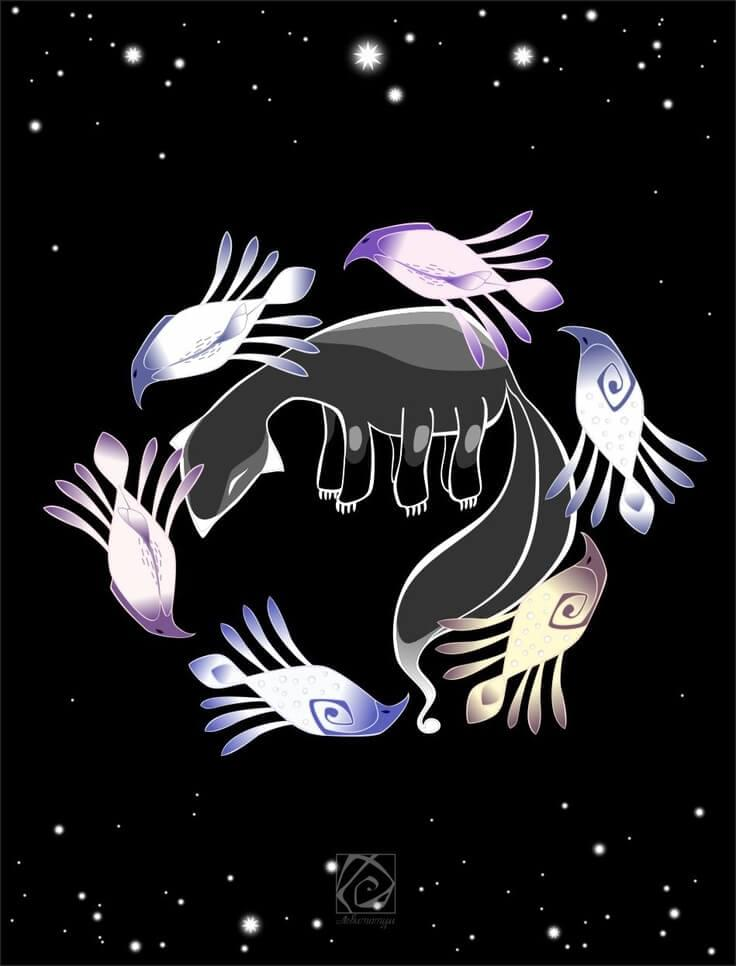
Жил-был один Левитёнок и очень уж ему нравились звёзды. Он мог часами наблюдать за ними и даже не спать. Почти.
Однажды он слишком сильно потянулся к самой яркой, самой лучистой звезде. Вот она его и притянула.
Оказался наш маленький Левитёнок один среди звёзд. А там, между прочим, холодно.
Через какое-то время гравитация Мира, конечно, притянула бедолагу обратно. Но был он совсем холодный уже.
И грустный.
Тогда его перенесли на остров Ласковых птиц. Они стали ласкаться к нему, обдувать волшебными пальчиковыми пёрышками, а он стал гладить их пушистые спинки. И повеселел)))))
Вот так это работает!
Это была история о Левитенке тянущемся к звёздам.

Ласковые птицы и Семицветиковое растение
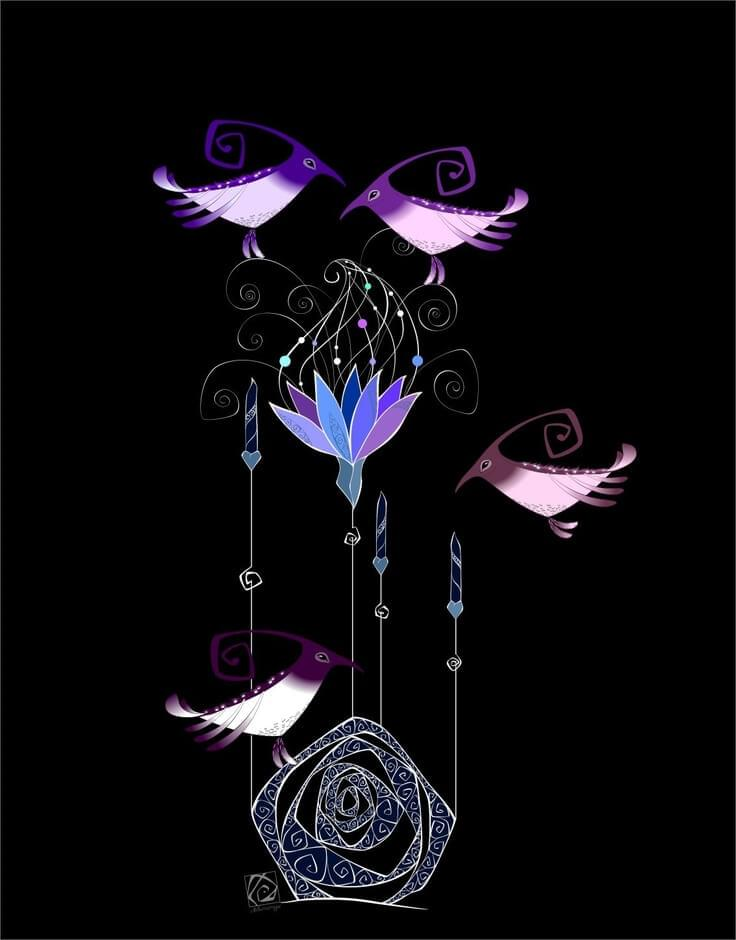
Первое упоминание о Ласковых птицах было в истории о Семицветиковых растениях: «Чтобы получилось такое сложное узорчатое растение, Левитянам приходиться прилагать большие усилия. …
И старания эти не пропадают зря, радуют глаз, украшая острова и привлекая внимание Ласковых Птиц»
Так в чём же причина этого интереса?
Кроме любования растением у птиц есть и практический резон. Накопительные капельки, те, что на пушистых спинках, эти птахи берут именно из распустившихся цветков Семицветикового растения.
Цветы распускаются специально для Ласковых птиц. Именно по этой причине мне так долго пришлось выискивать раскрытый цветок, что бы его нарисовать. Просто рядом не оказывалось птиц!
Стоит только стае появиться вблизи растения, как цветок тут же дружелюбно распахивается для них. Птички встряхивают нанизанные на усики капли друг на друга. Запасаясь волшебством от мира, чтобы преобразовать и вернуть его в нужный момент.
Зимняя Левитянская Сказка
Мир Левитатум больше всего напоминает зимний мир Земли. Та же графичность. Тишина. И спокойствие, растворенное в пространстве.
Жил-был молодой Левитянин. Однажды, прямо после сна, он почувствовал в себе сильную тягу к путешествиям. Левитянам свойственно ходить в гости. И не только по вихрям в другие миры, но и у себя, по островам. Миграция бывает случайная (с помощью Ветра) и осознанная (куда глаза глядят). Путешествуют Левитяне из любопытства, при этом обмениваясь опытом и идеями.
…
Наш Левитёнок собирался отсутствовать недолго. Ровно до вечера. До вечера одного из следующих дней.
Но время пробегало незаметно. Я не стану описывать в подробностях все эти восторженные встречи с собратьями на новых для Левитенка землях. Везде он оказывался в кругу друзей, где его рады были обнять, накормить, научить новым интересностям.
Скажу лишь, что он побывал и на крошечных островках с небольшими Вихревыми Деревьями и несколькими растениями, и на островах-гигантах с высокими, раскидистыми Вихревыми Деревьями и разнообразной многочисленной флорой и фауной.
Многие растения Левитенок увидел впервые. В создании некоторых ему довелось поучаствовать.
От своих новых друзей он узнал весёлые игры и чудесные затеи, которыми собирался поделиться по возвращении.
…
Но вот про одну из встреч я расскажу вам подробнее.
Плывя в пространстве и перебирая в памяти недавние красочные события, Левитёнок заметил огромный остров. Остров был гораздо крупнее виденных им до сих пор. Но поразило нашего путешественника не это.
Остров был почти прозрачным!
Никогда прежде ему не встречалась такая странность. Прозрачность попадается в Мире: цветы, крылышки и лже-крылышки. Но так, что бы весь остров целиком…
Заинтригованный, Левитянин поскорее переместился к нему. Подлетев поближе, он стал кружить вокруг Острова, любуясь им.
Каждое замечательно красивое растение, каждая изящная веточка, каждый корешок были, чем дальше от матовой земли, тем прозрачнее.
Эту прозрачность подчеркивала темная сторона, на которую был перевернут Остров. Через почти незаметные ветви Вихревого Дерева просвечивали звёзды. Само Дерево соответствовало размерам необычного Острова, оно было исполинским!
Полюбовавшись чудом на расстоянии, наш путешественник приблизился к нему. И как только его лапки коснулись земли, Левитёнок понял, что Остров больше не обитаем. Левитяне, которые жили с ним в последнее время, ушли, чтобы дать Острову закончиться.
Остров исчезал.
Он начинался очень-очень давно, когда в Мире бурлила, закручивая вихри, молодая и дерзкая Гравитация. В одном из этих вихрей и зародился Остров. Он растился и воображался многими Левитянами и многие Левитяне зародились на нём.
Оставаясь на Острове, Левитяне продолжали бы держать его своими мыслями и представлениями. И им пришлось уйти, чтобы не мешать. Они расселились по Миру, унося в сердце и мыслях его частичку. Потому что, исчезая в одном месте, невозможно не появиться в другом.
Все это понял Левитёнок через первое прикосновение. А еще он понял, что может остаться с Островом. Ведь они были знакомы совсем немного и не успели установить прочных симбиотических связей.
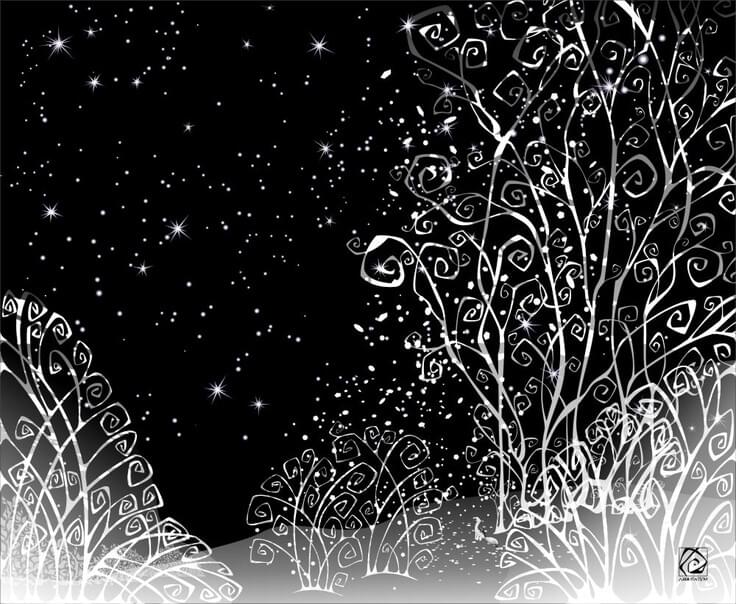
Он остался и некоторое время сидел под главным Вихревым Деревом в полной тишине. Ткани острова истончались, и вот послышалось тихое шуршание. Левитёнок поднял голову и увидел, что крона далеко вверху начала осыпаться на землю прозрачными кристаллами, они долетали до почвы и укрывали её и всё вокруг. Грани кристалликов сверкали, переливаясь отраженными звездами. В конце концов и все растения стали осыпаться с тихим шуршанием.
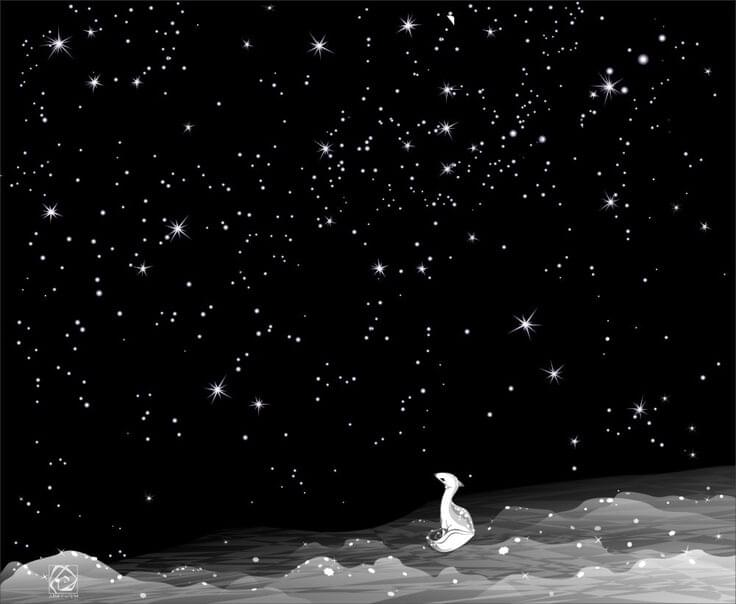
Искринки пушистыми холмиками лежали на земле вокруг Левитенка, присыпанного сверкающими прозрачными кусочками.
И привиделась ему в этот момент волшебная земля, живой мир, сверкающий миллионами кристаллов, мир яркий от близости к нему одной из звёзд.
Прекрасное видение исчезло, но Левитенок понял, что это было приглашение. И когда-нибудь он обязательно туда отправится. А сейчас ему очень захотелось домой. Он оглянулся вокруг, все сверкающие кристаллы, припорошившие остров, исчезли без следа, оставшись только на тельце, голове и хвостике Левитянина.
Потом он почувствовал, что Гравитация отпустила Остров и отошла в сторонку. Прозрачные кусочки почвы стали отделяться и рассеиваться в пространстве Мира.
Искрящийся Левитёнок повисел немного в пустоте между звездной и светлой сторонами. Он чувствовал благодарность за воспоминания, которые всегда будут с ним и которыми он поделится с другими. Ему было немного грустно, но при этом спокойно и мирно.
Пора возвращаться.
P.S. Левитенок не забыл свое видение и однажды воспользовавшись приглашением переместился в чудесный мир из своего видения. Здесь он получил имя Искрящийся под зимним солнцем.
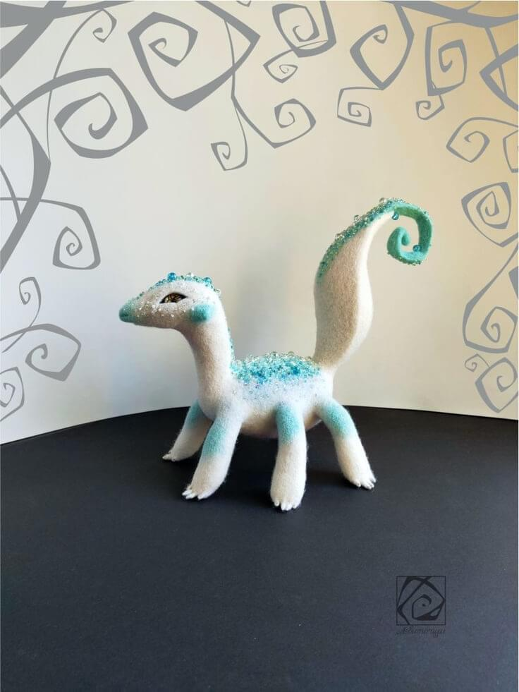
Насекомыши. Веточники.
Веточники - это одна из разновидностей насекомышей обитающих в Мире Левитатум. Когда-то я уже рассказывала вам о Ягодных насекомышах, способных устраивать микровзрывы во рту у Левитян. Веточники гораздо более спокойные существа. По своей природе они немного (а быть может и на целую половину) растения, и способны срастаться с кустом на время становясь его частью.
В период единения растение отращивает новых маленьких Веточников, которые подрастая, переползают на другие кусты или деревья.
Как и всякий симбиоз, это соседство взаимовыгодно. Способствуя появлению в Мире новых насекомышей, растение и само напитывается жизнью, а от этого лучше и быстрее растёт.
За свою жизнь эти насекомыши уживаются с тремя – четырьмя растениями.
Старые Веточники просто перестают быть насекомышами и окончательно становятся частью ветки.
Гравитация
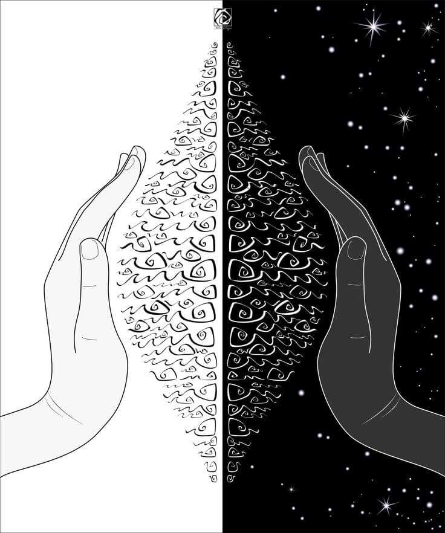
Гравитация - основа Мира Левитатум. Она пронизывает Мир, дав когда-то ему начало и теперь, желая его продолжения.
Гравитация соединила две непохожести: тёмную безбрежность украшенную звёздами и светлую бескрайность – загадочную пустоту.
Она разлилась гравитационными волнами, затопив края двух частей Мира, и обосновалась на этой границе. Стала там хозяйничать, создавая своим мощным и ласковым присутствием Острова и сберегая жизнь на них. Ею скручены левитянские хвостики и веточки многих растений. Она дарит вихри и способность к левитации вместе с ними.
…
Каждый остров наделён своим центром гравитации. Он находиться в корнях. Благодаря этому верх это всегда верх, как ни крути.
Молодые корешки имеют достаточно гравитационной силы для начинающегося острова. А вот для взрослого, густонаселенного острова, этой силы бывает недостаточно. Поэтому в его почве среди корней есть гравитационные копилочки. Этакие батарейки. Они напрямую связаны с Гравитацией и подпитывают корни, когда это бывает нужно. …
О пузатых Норочниках
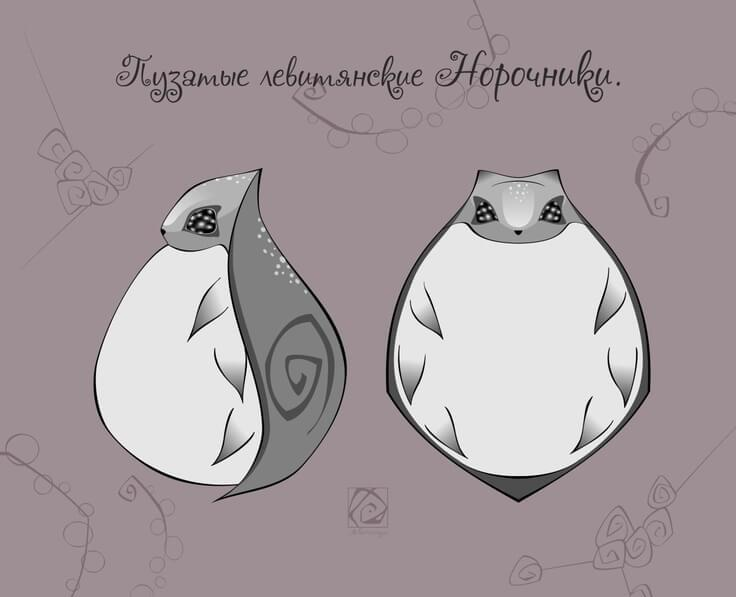
Для Норочников очень важно сохранять упитанность. Ведь чем значительнее тельце, тем больше гравитации оно может уместить, а это бывает жизненно важно для острова. Для сохранения своих округлостей эти существа не жалеют сил. Они много едят и мало двигаются.
Левитяне заботятся о разнообразном и питательном рационе пузатиков. Они выращивают множество ягодок-плодов возле норок. Бывает, сами их собирают и укладывают у входа, бывает, переносят пухлячков к кустам поближе. Левитяне неутомимы в своих хлопотах. Однажды мне на глаза попалась полянка, полная ягодных растений и ни одно из них не повторялось!
А еще заботливые Левитяне помогают вырасти вкуснейшим подземным плодам на тонких корнях-паутинках. Эти плоды приятно пахнут и Норочники легко находят их.

Почва острова плотная только снаружи. Внутри она рыхлая и легко расходится пред Пузатиком, а потом смыкается за ним. Поэтому постоянные подземные ходы не нужны. Благодаря особому расположению лапок, Норочники без усилий перемещаются внутри острова. Это больше похоже на плавание, а не на ползание.
Сами норки, где залегают «батарейки», округлые и небольшие. Они бывают одноместные. Но обычно вмещают небольшую компанию, и тогда это похоже на распустившийся венчик из трех или пяти лепестков.
И вот казалось бы, скучно должно быть от такой однообразной жизни. Поели-поспали.
Но не забывайте о связи с Гравитацией! У Норочников с ней «общие глаза». Находясь между корней внутри островов, они видят свой огромный красивый Мир целиком, и в бесконечных мелочах.
Подзабудки
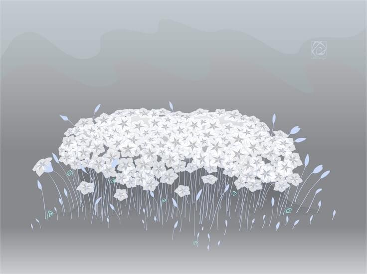
В этот раз расскажу вам об удивительных свойствах вот этих неброских цветочков. Их было бы приметить трудно, если бы не росли они полянками. Множество цветочков, качаясь на стебельках-ниточках, все вместе напоминают облако, невесомое и пушистое. Любой, кто сядет рядом будет заворожен этим зрелищем.
Цветы эти я зову Подзабудками. Глядишь на них, и забываются неприятности и горести.
Действие Подзабудок не похоже на дурман.
От них хорошие воспоминания становятся ярче, выходят в первые ряды памяти. А недавние тяжкие впечатления уходят вглубь, бледнеют и сглаживаются, но не забываются, а только лишь теряют остроту.
Недолго смотришь на легкое облачко – грустный случай как бы отодвигается на неделю назад. А глядишь подольше – будто бы минул месяц.
Разлуки у Левитян случаются часто. Ведь они любители путешествий, при этом их островные компании очень дружны.
И вот уходит один из них, в ведомые, а чаще, неведомые дали, и оставшимся Левитянам тоскливо. Если грустными выглядят даже хвостики, становиться ясно, что без Подзабудок не обойтись.
Поникшая компания за несколько минут помогает вырасти цветам. Колыхание утешительного облачка делает сегодняшними счастливые моменты, проведенные вместе когда-то.
Легкая печаль от разлуки заметно светлеет. Примирённые с действительностью Левитяне снова могут заняться обычными делами.
Миражники
Для меня Миражники самая большая загадка мира Левитатум. Они никак себя не проявляют, не общаются, левитируют почти неподвижно. Они, как-будто, просто есть.
Эти существа возникают на границы зрения. Переводишь на них прямой взгляд, и они растворяются как мираж. Я пыталась рассмотреть их, поворачиваясь еле заметно, и наоборот, очень быстро, резко. Итог один – исчезают.
Пришлось приноровиться и разглядывать боковым зрением.
Первое что удивляет в их внешности, это глаза. Они человеческие. Как раз эта деталь и навела меня на предположение, кто же они такие. Своей догадкой я поделюсь с вами позже.
Миражники всегда находятся в паре. Одно создание скользит по светлой стороне, и строго под ним, на звёздной стороне скользит второе. Отдельное перемещение мне ни разу не попадалось.
А может быть это одно существо в двух частях?
Я всегда вижу их парящими в пространстве. При мне они ни разу не опускались на остров. С такой гривой вихрей им, видимо, совсем не нужна опора.
Миражную пару я вижу в цвете. Эта часть спектра не существует в нашей вселенной, и потому, если я скажу вам, что они глубокого маринового цвета, умом вы меня не поймёте. Но если я расскажу вам, что этот цвет похож на озорную чехарду солнечных бликов, которую устроил серьёзный вековой дуб и немного напоминает новогодний запах мандаринов с лёгким оттенком прохладных брызг в лицо от солёного моря, вы наверняка его почувствуете и сможете вообразить!
В другом цвете я Миражников не представляю, поэтому шерстяное воплощение я оставила ахроматическим.
Итак, на какую же догадку навели меня человеческие глаза Миражников? Кто или что они такое?
Я думаю, это…
люди, такие же наблюдатели этого Мира, как и я, только из разных времён и эпох! Проверить эту версию я не могу, потому что не вижу себя со стороны. Возможно, однажды, мне попадется гладкая поверхность и, отразившись в ней, я увижу изящного Миражника с моими зелёными глазами.
Если Миражники - это и правда вместилище человеческого сознания, гостящего в Левитатуме, то становиться понятно, почему они так замечательно приспособлены к длительной левитации. Множество вихрей компенсирует небольшой навык в этом деле.
И еще, делается очевидно, что их двойственность нужна чтобы наблюдать одновременно обе стороны Мира.
Так же моя догадка объясняет неуловимость их образов. Наше, земное течение времени не терпит чехарды и препятствует прямому контакту людей живущих не одновременно.
И можно предположить, почему глаза у них не объёмные, как у других существ Мира, а как будто нарисованы. На их аккуратных головах отображение глаз людских, а не сами глаза.
Такова моя догадка, а уж как там на самом деле…
Одуванчиковые насекомыши
В Левитянской «траве» попадаются разнообразные насекомыши.
Есть насекомыши как насекомыши, вот как Ягодные, например. (история «О ягодных насекомышах»)
Есть такие, которые на самом деле совсем не насекомыши, а часть растений. (история «Мотыльковые растения»)
Бывают насекомыши, такие как Веточники. Они переходят от растительной стадии в стадию насекомого, а потом обратно. (история «Насекомыши. Веточники.»)
Сегодня я расскажу вам о похожем виде.
Вот вырос цветок, обычный, Левитянский. Что бы он проявил свою особенность его нужно сорвать, поднести к лицу, тихо сказать «кы-ыш!» и потрясти! (Левитяне «кы-ыш!» говорят мысленно😊)
Тогда лепестки, шурша, отделяются от цветка, но не опадают на полянку, как должны бы, а крылатыми букашками разлетаются по округе, мимоходом пощекотав носик и лобик оживившего их.
И это весело!
Если сорвать несколько цветочков – будет ещё веселее!!
А если нарвать целую охапку одувашечек, да вскарабкаться на ветку повыше и уже там встряхнуть его – это будет совсем весело!!!
Вот так резвятся Левитяне, бегая по своим летним полянкам. В их безвременье нет деления на времена года, но мне больше нравиться думать о таких полянках, как о летних. ☀
Соединение островов. Стоцветок.
Удивительные парящие острова Мира иногда соединяются. На время они объединяются благодаря желанию и усилиям Левитян, которые наводят мосты. Реже они сливаются насовсем по воле Главных Вихревых Деревьев. Процесс этот не быстрый и происходит всё так..
Разбросанные среди других островов, живут два Острова с каемками, совпадающими как две половинки одного целого. Главные Вихревые Деревья этих островов сознают, что где-то в Мире есть их остров-совпадение. Однажды, подталкиваемые проницательной Гравитацией, эти острова оказываются рядом и тогда Деревья, узнав друг друга, сплетаются корнями, чтобы никогда не расставаться.
Корни постепенно обрастают почвой, место соединения становиться незаметным.
Отдохнув, Главные Вихревые Деревья начинают ветвиться навстречу и со временем срастаются кронами, образуя подобие арки.
Идёт время, деревья набираются сил. По земным меркам проходит полгода. И наконец, из переплетения ветвей, рождается Цветок. Один. Но очень важный и нужный всему Миру.
Бутон поднимается над соединённым островом и распускается, медленно кружась. Разворачивает пышные лепестки вокруг плотно свёрнутой серединки.
Спелый цветок начинает источать аромат ста пионов, ста роз и ста клубничных полян. Этот аромат нежен, но силён. Он проникает во все пределы и заполняет всё пространство. Расширяясь на весь Мир, дотягивается до са-амых дальних островов, очаровывая Главные Вихревые Деревья.
Очарованные Деревья, мечтая о прекрасном, создают небольшие зёрнышки. Возникшие из аромата и мечты, зёрнышки кружатся плавно и медленно над их кронами, пока каждое из них не поцелует Гравитация. Тогда они падают и теряются в корнях, где их позже будут собирать Левитяне, называя Всёсемечками.
Так, Вихревые Деревья, зацветши в одном месте, порождают семена совсем в другом.
Левитянам в этом процессе рождения Стоцветка и Всёсемечек, отводиться роль наблюдателей. Но они, как и всё живое, ощущают аромат цветка. И он на них тоже действует. Правда, семян они не образуют. Аромат просто им очень приятен, а потому придает сил и создает доброе, праздничное настроение.
Приподнятое и доброе настроение, можно называть на левитянский манер – стоцветковое настроение.
Когда я записываю истории из Мира Левитатум, у меня всегда стоцветковое настроение!